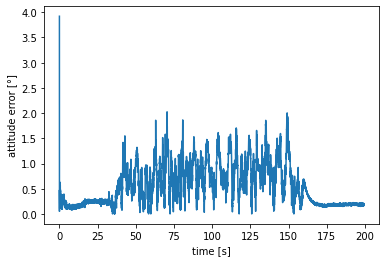

import matplotlib.pyplot as plt
import numpy as npApplication Example of RIANN on the BROAD Dataset
Download the data of the BROAD dataset (https://doi.org/10.3390/data6070072). The notebook assumes, that the data_hdf5 Folder is inside of the working directory.
#!wget https://depositonce.tu-berlin.de/bitstream/11303/13238/2/broad.zip
#!unzip broad.zipLoad the reference orientation, accelerometer, gyroscope and sampling-rate values of a measurement.
#!pip install h5py
import h5py
with h5py.File('data_hdf5/01_undisturbed_slow_rotation_A.hdf5','r') as f:
acc = f['imu_acc'][:]
gyr = f['imu_gyr'][:]
ref_quat = f['opt_quat'][:]
fs = f.attrs['sampling_rate']Use RIANN to estimate the attitude of the IMU
from riann.riann import RIANN
riann = RIANN()
est_quat = riann.predict(acc,gyr,fs)
est_quat.shape(56940, 4)Define the attitude error metric for the final evaluation
def relativeQuat(q1, q2):
"""quat1*inv(quat2)"""
o1 = q1[..., 0] * q2[..., 0] + q1[..., 1] * q2[..., 1] + q1[..., 2] * q2[..., 2] + q1[..., 3] * q2[..., 3]
o2 = -q1[..., 0] * q2[..., 1] + q1[..., 1] * q2[..., 0] - q1[..., 2] * q2[..., 3] + q1[..., 3] * q2[..., 2]
o3 = -q1[..., 0] * q2[..., 2] + q1[..., 1] * q2[..., 3] + q1[..., 2] * q2[..., 0] - q1[..., 3] * q2[..., 1]
o4 = -q1[..., 0] * q2[..., 3] - q1[..., 1] * q2[..., 2] + q1[..., 2] * q2[..., 1] + q1[..., 3] * q2[..., 0]
return np.stack([o1,o2,o3,o4],axis=-1)
def safe_acos_double(t,eps = 1e-16):
'''numericaly stable variant of arcuscosine, uses 64bit floats for internal computation for increased accuracy'''
return np.float32(np.arccos(np.clip(np.float64(t),-1.0 + eps, 1.0 - eps)))
def attitudeAngleDeg(q1,q2):
'''the attitude error between to quaternions in degree'''
q = relativeQuat(q1,q2)
return 2*safe_acos_double(np.sqrt(q[..., 3]**2 + q[..., 0]**2))/np.pi*180Plot the attitude error of every time step
plt.figure()
x = np.linspace(0,ref_quat.shape[0]/fs,ref_quat.shape[0])
plt.plot(x,attitudeAngleDeg(est_quat,ref_quat))
plt.xlabel('time [s]')
plt.ylabel('attitude error [°]')Text(0, 0.5, 'attitude error [°]')